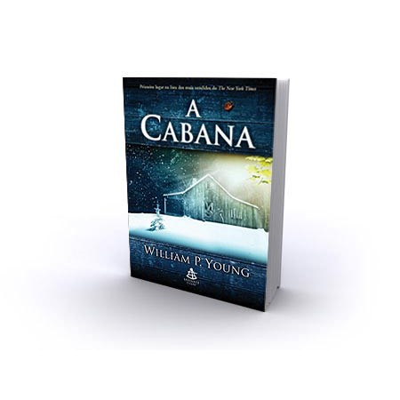

O livro se desenrola em torno do luto de Mack e sua luta para superar a perda da filha. Em um dia, ele recebe um bilhete misterioso em sua caixa de correio, supostamente de Deus, convidando-o para passar um fim de semana na cabana onde sua filha foi encontrada morta.
Mack inicialmente reluta em aceitar o convite, mas finalmente cede à curiosidade e decide ir para a cabana. Lá, ele é recebido por três personagens incomuns: Papa, uma mulher negra, Jesus, um homem do Oriente Médio, e Sarayu, uma mulher asiática.
Os três personagens representam a Santíssima Trindade e guiam Mack em uma jornada de cura e transformação. Eles ajudam Mack a confrontar sua dor e raiva em relação à morte de sua filha e o guiam a uma compreensão mais profunda do amor e da graça divina.
Durante o fim de semana, Mack tem conversas profundas com os três personagens e aprende a perdoar e a deixar de lado sua dor. Ele também descobre a verdade sobre a morte de sua filha e encontra paz e redenção.
Além dos personagens principais, há outros personagens secundários importantes, como a esposa de Mack, Nan, que é uma forte apoiadora de seu marido e o ajuda em sua jornada de cura, e Missy, a filha de Mack que é vista em flashbacks e em visões que Mack tem durante sua estadia na cabana.
A Cabana é um livro poderoso e emocionante sobre a dor, a cura e a fé. Ele retrata uma jornada de transformação pessoal que é emocionante e inspiradora. O livro foi aclamado por muitos leitores como uma leitura profundamente comovente e edificante, que leva o leitor a uma reflexão profunda sobre sua própria vida e espiritualidade.
Em A Cabana, um homem vive atormentado após perder a sua filha mais nova, cujo corpo nunca foi encontrado, mas sinais de que ela teria sido violentada e assassinada são encontrados em uma cabana nas montanhas. Anos depois da tragédia, ele recebe um chamado misterioso para retornar a esse local, onde ele vai receber uma lição de vida.
William P. Young nasceu em Alberta, Canadá, no dia 11 de maio de 1955. Filho de missionários, antes de completar um ano de idade foi morar com os eles em Papua-Nova Guiné, no Sudeste Asiático
Formou-se em religião na Warner Pacific College, em Oregon, Estados Unidos. Afirma que não segue religiões, que aposta mais em relacionamentos com Deus. Para ele, as religiões de certa forma dividem as pessoas em vez de unir. Em 2007 escreveu o romance “A Cabana”, que narra a história de um homem que, no lugar onde sua filha foi assassinada, tem um encontro com Deus (que aparece sob a forma de uma dona de casa negra) e com Jesus Cristo (transmutado num carpinteiro metido a piadista). A inspiração veio de seu passado.
A Cabana ganhou o Diamond Award em 2009. Vendeu mais de 18 milhões de exemplares no mundo. Seu trabalho é muitas vezes classificado como um livro de autoajuda. Em 2012 publicou “A Travessia” (Cross Roads), que segue a mesma linha de A Cabana, com uma narrativa intensa, sensível e transformadora. Seu mais recente livro é “Eva” (Eve) (2015), onde faz uma abordagem totalmente nova da história da criação.
Livros de publicados:
- A travessia
- EVA
- cross roads
- Eve: roman
- La encrucijada
E outros !!
O Livro pode ser adquirido no pelo site da Amazon. Clique na imagem para acessar!!
